Franco Cedano fac24, David Drew djd36, Wan Ling Yih wy47
Introduction
Our goal was to take the processor designed by Cornell’s Big Red Chip (BRC) project team and implement it on the DE2 Development and Education Board which uses the Altera Cyclone II Field Programmable Gate Array (FPGA). We intended to integrate it with a real time input and output to make it part of a real time Global Positioning System (GPS) tracking system. The BRC design would serve as the processor necessary to run a software receiver. We chose this project for several reasons. The first and foremost was to take an out of class interest we all shared (the BRC project team) and apply it to what we have been learning all semester. We also felt the project built nicely off of the third lab, which involved implementing custom CPUs. We were very interested in the challenges offered from having to implement and debug a CPU on an FPGA that was originally written for custom silicon. Lastly, we all felt this project would give us a new insight and perspective into the strengths, weaknesses, and limitations of our design. To these ends, we began by transferring the entire design of the processor onto the FPGA, reworking the design as needed to make it functional. We spent a large portion of our time working to get the ADC (Analog to Digital Converter) input operating properly and the custom compiler for the processor’s Instruction Set Architecture (ISA) to compile correctly. We wrote code in C and ASM (assembly) to run on our processor. Finally, we worked to devise a method to produce output from a processor design that has no real time output using MATLAB.
High Level Design
Rationale and Sources
The motivation behind the project is to implement a System on a Chip (SoC) design on the FPGA. The three members of our team are part of the BRC project team and therefore have access to the BRC design. The current BRC design is the first step in what will eventually be a complete SoC design. The other components of the SoC include a Microelectromechanical systems (MEMs) antenna to receive GPS signals, an RF-front end that modulates the signal to a defined intermediate frequency, and an ADC that converts the analog signal into a digital format that will be the input of the BRC processor design.
Early on we decided that we did not want to concentrate on the input side of the system, i.e. receiving an actual GPS signal and converting it into a digital format. Instead we would supply our system with fake GPS data generated with a script and concentrate on outputting data from the chip. Since the processor does not have a real time continuous output this was a problem. The only way to access information on the chip is to halt the execution of the CPU and read out data. By doing this as quickly and seamlessly as possible we hoped to show that this design could be part of a real time system through the use of a “debugging feature”.
Below is a Schematic of what was envisioned to be the high-level block diagram of our final system.
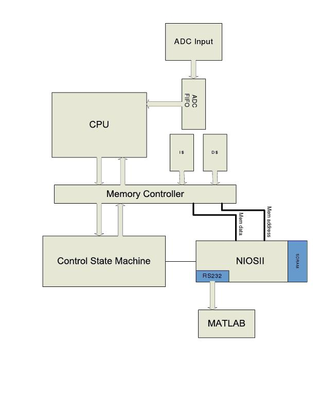
Big Red Chip Background
The Big Red Chip is a student designed architecture meant to provide Cornell research groups with a general platform design for developing a complete system on a chip (SoC). The idea is that by implementing all the basic instructions of a general purpose CPU, leaving unused OP codes in the ISA, and providing the user with the Verilog source code of hardware, they can add specialized functionality that suits their specific needs. This specialized hardware would provide the user with a custom design that would provide better performance than implementing such functionality in software on, for example, a microcontroller or some other general embedded device. In addition, the turnaround time for the custom design would be much shorter than if the user designed the entire architecture from scratch.
A major goal of the BRC was to have the design be a low power solution. The first iteration of the BRC has been designed to be a software radio receiver for GPS applications. As it is a software receiver the acquisition and tracking of the incoming GPS signal is done in software with some specialized hardware support to ease computation. The CPU will spend most of its time computing the cross-correlation between incoming GPS PsuedoRandom Noise (PRN)-code and a locally generated copy. In a typical software receiver these correlation computations would be done using multiply and additions or a fast multiply and accumulate instruction. This is expensive from a power standpoint as this would require a hardware multiplier which is very large compared to addition and general Boolean bitwise operations. To get around these expensive multiplies the BRC software algorithm incorporated the work of Cornell’s Professors Mark Psiaki and Paul Kintner, who developed a bitwise algorithm for computing cross-correlation.
In order to run code on the custom BRC processor with its custom ISA a custom compiler is needed. As part of the design, last year’s team ported the GNU compiler collection (gcc) to generate machine code for the BRC architecture. This included porting many standard libraries and binutils.
GPS Background
GPS or Global Positioning System is a navigation system that uses the orbit of 32 GPS satellites that send signals about their current location and their satellite number. This information is used to compute a location on earth. The receiver determines its location through trilateration. By knowing the distance from multiple known locations you can pinpoint your location. The concept of trilateration in 2-D is depicted below. To locate your position in 2-D, one needs to know its distance from three points of reference. To locate precisely in 3-D, a receiver needs to be tracking at least four satellites.
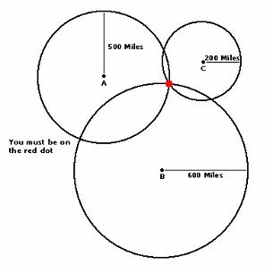
Each satellite transmits a continuous stream of data. Part of the transmission is called ephemeris data which can be simplified to being a signal saying I am satellite X, my current location is Y, this transmission began at time Z. By measuring the time it takes to receive that data, and knowing the velocity at which the signal travels, the receiver can determine its distance to each satellite it is tracking and proceed to locate itself using trilateration.
Each GPS satellite has a unique PRN code that the receiver has a local copy of. After a signal has been acquired and we know which satellite we are tracking, (this process will not be explained here and can be abstracted for our purposes) the receiver begins the task of determining its distance to the satellite.
The incoming PRN code will be delayed by some amount compared to the receiver’s local copy. By figuring out how many bits the signal is delayed by, the receiver can then compute its distance to the known position of the satellite. The process of calculating how much a signal is delayed by is known as cross correlation. When the incoming signal is received it is multiplied by the local copy. We then count the number of ones in the result of the multiplication. Counting the number of ones in a binary representation of a number is known as population count. The normalized value of the population count is what we call the correlation. The PRN codes are chosen so that the population count is maximized when the signals are aligned. By finding the correlation for every phase shift of the received signal we can then find the maximum value. By finding the maximum value we can see how much the signal was delayed by and deduce the distance to the satellite. Figure 2 shows the cross correlation of two PRN codes that are misaligned.
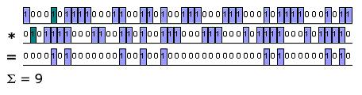
Figure 3 shows the correlation for the same signal when it has been shifted and properly aligned.
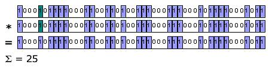
Finally, Figure 4 shows the correlation for all possible shift amounts. It is clear from this figure that the value is maximized when the received code was phase shifted by three bits. This information would be used in conjunction with how fast the signal is moving and when it was sent to calculate the distance to that satellite.
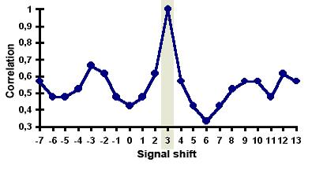
Big Red Chip Architecture
The first iteration of the Big Red Chip (BRC) is designed to be a low power general purpose processor with specialized hardware to make the correlation process explained above simpler to implement in hardware.
It is a 16-bit Reduced Instruction Set Computer (RISC) architecture with register addressed memory (no offset). The ISA is modeled after a MIPs ISA, with only the most basic operations included. Free op-codes were used to encode the specialized GPS specific instructions. It is a three stage pipeline. Having a short pipeline reduces the number of pipeline registers, control logic, and forwarding paths which is a big power saver.
The first stage of the pipeline is the IF/RD stage. The IF stage fetches the next instruction from the instruction cache specified by the address at the PC register which is incremented by 2 (instruction words are 2 bytes) every clock cycle. The PC counter updates at every positive edge of the system clock, and it will fetch an instruction from the 2K instruction cache every negative clock edge. The RD stage contains 8 general purpose register files that have asynchronous reads and synchronous writes on the negative edge. The branch compare unit also resides in this stage, and hence the result of the branch can be computed before the next cycle, which eliminates the need for a branch delay slot.
The second stage of the pipeline is the EX/MEM stage. The EX stage contains the Arithmetic Logic Unit (ALU) that performs all the arithmetic and bitwise operations (add, sub, and, or, etc.). The MEM stage within the pipeline contains an 8KB data cache that is register indirect addressable. Having memory addresses addressed only by the values of registers allows us to place the EX and MEM stages in the same stage as no effective memory address calculation is needed to access memory. This stage of the pipeline also includes the gold code state machine that will generate the PRN-code that will be correlated with the ADC First In First Out (FIFO) data performed by the GPS software running on the chip.
The final stage of the pipeline is the WB stage. This is a fairly simple stage that writes back the data computed after the EX stage to the register files. It also has a forwarding unit that forwards values to the EX /MEM stage if there is a dependant instruction there.
There is a clock state machine that produces the different clocks necessary to run the different parts of the hardware. It takes in an internal clock, int_clk, and divides it by two to generate the system clock which the pipeline is clocked at. It also generates a quarter phase shifted clock that was used to fix a timing path in the register decode stage. In addition it can generate the ADC clock if the user specifies this option.
A diagram of our pipeline is below.
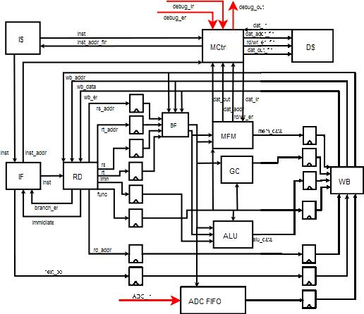
GPS Specific Instructions and Hardware
To facilitate the software tracking algorithm the BRC architecture has included some specialized hardware. The first is a gold code generator. This is a feedback shift register that produces a pseudo random number known as gold code that is used to encode and decode a satellites message so that multiple satellites can transmit at the same frequency (similar to CDMA). The gold code is a fixed and known bit sequence for each satellite. As long as the same initial seed is used the gold code generator will always produce the same sequence of bits. Having this code generated on the fly is a power optimization as it prevents the need to have it stored in memory. A specialized instruction, gc, has been included in the ISA to load the next byte of the gold code from the gold code generator. A phase shift can also be specified in the instruction.
Another special hardware element that was included in the BRC is an input buffering system. The incoming raw GPS signal is assumed to have quantized to one bit externally. The chip has an ADC buffering system that consists of a FIFO. When 8-bits of input have been accumulated the byte is written to a FIFO. Data can be loaded from the FIFO with the adcld instruction. There is a separate FIFO for each satellite being tracked so that each can be corrected for Doppler effect.
A method for correcting the input for Doppler shift has also been implemented in hardware. It consists of controlling the way the input bits are queued before being written to the FIFO. By repeating a bit or skipping a bit at the input, the system can correct for positive and negative Doppler shifts. The rates at which these repeats or skips of bits occur can be adjusted to the specific Doppler shift begin compensated for. Since signals from different satellites will have different Doppler shifts separate input buffers have been implemented in hardware for each satellite being tracked. This Doppler correcting state machine can be changed through the adccnt instruction.
The final special instruction included in the BRC ISA is popc. This is a population count instruction that computes the number of 1’s in the binary representation of a number. This instruction is used as part of the correlation computation as explained above.
Debugging and Testing Features
The only true debugging feature that the BRC employs is a scan chain. This is meant to debug the final silicon implementation of the architecture, and was not used as a debugging feature for this class since we have tools like signal tap. Another feature that can be used for debugging is the off chip memory controller. This is not a memory controller in the classical sense, instead the controller implements a memory hierarchy and allows off chip memory access during program execution. This memory controller is meant to load instructions into instruction and data caches. It can also be used to read out the contents of the caches. We use this read out feature to read the values of data memory which we are concerned with.
Design
FPGA Integration
The first design issue we faced was loading the BRC design on the FPGA. We were initially unsure if the design would fit on the FPGA, and whether all parts would be synthesizable. After a first attempt to compile the design we realized that none of the memory instances would be synthesizable on an FPGA if compiled with Quartus II. Memory that was part of the original design was generated through an ARM memory compiler. Data and instruction caches were Static Random Access Memory (SRAM), and the FIFO memory was a two port register file. The ARM compiled memories made use of tasks with long for loops that Quartus did not seem to like and caused errors during compilation.
Replacing these memories was relatively straight forward. We used Altera Megafunction alsyncram for the SRAM for the data and instruction memories. We specified word length, memory depths, and read and write enables to match the original ones as close as possible to avoid having to change any logic in the memory controllers. The FIFO registers were replaced with an Altera Megafunction that created 2 port registers, again specifying the parameters to closely match the original.
In the original ARM data memory there was a 2-bit write enable that decided which byte of a memory location would get saved or loaded. The altsyncram function creates separate 1-bit write enable and 2-bit byte enable signals to specify what and when to write. It should be mentioned that the architecture only allows word aligned store word operations; this is enforced by ignoring the lowest bit of the address. All of the ARM compiled memories had active low enables, while the altsyncram had active high enables. Taking this into account the altsyncram function’s 2-bit byte enable was simply assigned the bitwise not of the original write enable signal. The altsyncram function’s single bit write enable was assigned the NAND of the two original write enable bits. If before you wanted to write to either the LSB or MSB of the specified address (indicated by a 0 at the corresponding bit) the single bit write enable would now be high, indicating we want to write.
CPU Control State Machine
The inputs to the CPU in the BRC design define the behavior of the processor as well as the state that it operates in. A specific sequence of signals needs to be applied to the CPU to start up. When a break instruction, which halts processor execution, is reached and the processor stops another sequence of signals needs to be applied if any of the debugging features are to be used or if you want to resume normal processor execution. The application of these sequences of signals was done by designing a hardware state machine on the FPGA. The state machine is clocked at the positive edge of the debug_clk, which is the clock the CPU uses during debug mode (after break instructions). We instantiated a Nios II processor (more on this below) on the FPGA to control and interface with the BRC processor. The behavior of the state machine, such as whether instruction or data memory is read or if the processor can resume, is controlled by the user through the Nios II console. The sequences that we used are given below.
Boot Sequence
Power Up state - The values of CPU signals at start up.
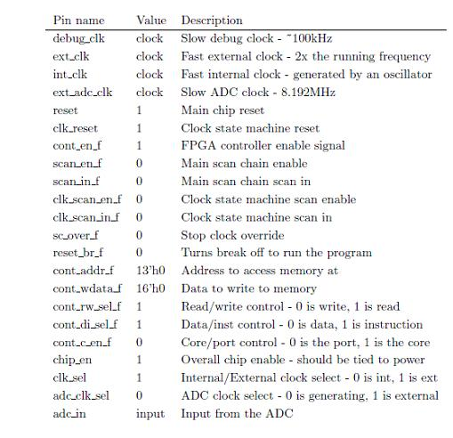
Starting the Clock state Machine – Resetting the clock state machine generates the appropriate clocks used by the system internally.
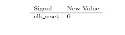
Starting the Program – Stop resetting all the registers allowing the PC to begin incrementing and instructions from the instruction cache to begin executing
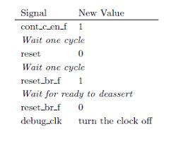
After the program starts executing it is now time to wait for the ready signal to be asserted. When a break instruction is executed the pipeline stalls and the clock ramps down. When the clock is done ramping down the CPU has now entered debug mode and ready is asserted. Once ready is asserted we can begin reading off the memory addresses that we are interested in. Once done we can tell the CPU to continue normal execution and again wait for ready to be asserted to load out data. The sequences for these steps are as follows:
Reading Data – Read out data memory by specifying the address we want.
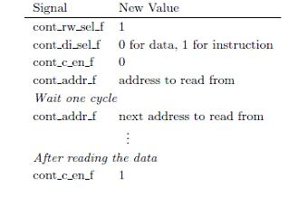
Clocking the CPU
The BRC team has specified the processor as being able to run at 50Mhz when fabricated on 130nm IBM process. This number was extracted by the tool that turned the gate level verilog of the design into a final layout. 50Mhz was the fastest the processor is expected to run on silicon without violating timing paths. It is interesting to see how the frequency of a design on an FPGA compares to that of an actual silicon solution. Presumably the FPGA would run slower as it is not a custom implementation of the design. We generated the slower clock using the Altera Megafunction altpll. The input frequency of the phase-locked loop (PLL) is 50Mhz and the output is 10Mhz. There is also a 50Mhz output, and a 50Mhz out shifted by -3ns for the Nios II and SRAM respectively. We decided to run it 10 times slower on the FPGA, so the int_clock is 10Mhz making the system clock 5Mhz as described in the BRC architecture background section. Overall this seemed to work well, although a few timing paths were violated. One of the paths was from the data cache to the Nios II, the signal failed by ~5ns on a 20ns period. Initially we thought this path was the cause of unexpected behavior when reading out data memory, but later we found a way to fix this (explained below), while the timing path violation still remains. Another failed timing path is in the ADC input hardware, which was reported to fail by ~20ns on a 100ns period. Initially we clocked the ADC at 10Mhz. We then switched to using an internally generated ADC clock which would run at 5/12Mhz, and the timing path failed by the same amount. Slowing down the system clock does not appear to change the failed timing path. The period is still indicated as being 100ns, which is the 10Mhz clock output generated by the PLL. But this 10Mhz clock is not the clock on which any logic in the CPU runs at. So basically no matter the clock frequency the CPU runs at the timing path stays the same. This behavior is very confusing and we were not able to figure out the cause.
Nios II Control
We created a Nios II to control the CPU state machine. We instantiated the economy version of the Nios II using SOPC builder. The Nios design included SRAM for its instruction and data memory, JTAG UART to communicate through the console in the Nios II IDE, an RS-232 UART to communicate with MATLAB, and 8 parallel input/output (PIO) signals. The PIOs are described as follows
| Name | Size | Direction | Description | |
|---|---|---|---|---|
| reset_pc | 1-bit | output | CPU control SM control signal. Sets state to the power up sequence. | |
| debug_clk | 1-bit | input | The debug clock that the CPU runs at during debug mode. Used to synchronize the other pio signals with the debug_clk | |
| boot | 1-bit | output | CPU control SM control signal. Allows the SM to continue past initial power up state and begin program execution | |
| ready | 1-bit | input | ready signal from the CPU indicating it is now in debug mode | |
| cont_addr | 16-bit | output | The address to read data from, connects directly to CPU | |
| cont_rdata | 16-bit | input | The data at memory location cont_addr, directly from CPU | |
| cont_di_sel | 1-bit | output | Select between reading instruction[1] or data[0] memory | |
| cont_c_en | 1-bit | output | CPU control SM control signal. Controls the actual cont_c_en signal going into the CPU. Specifies who has control of mem controller (core/port) |
The Nios II runs at 50Mhz and needs to control the BRC CPU while in debug mode which is running at a clock rate of 10Mhz. Normally the debug clock should run much slower than the system clock. This is to ensure that the system that would be debugging the CPU can correctly read in and out data. We want to make the offloading of data be as seamless as possible, this means reading out data as quick as possible to allow the CPU to continue normal execution. Since the “debugging system” used in this case to read memory, the FPGA itself, is able to handle receiving data at high clock frequency we chose to run the debug clock at 10Mhz. This is even faster than the normal system clock frequency of 5Mhz.
We set up a debug interface through the Nios II console that originally allowed us to boot the processor, read memory, or interface with MATLAB. The boot control was taken out in favor of using a switch so that when just debugging hardware the Nios II didn’t have to be programmed, but read memory and interface with MATLAB still remain. No matter what command is executed, after completing the command the C code for the debug interface resumes processor execution. As a result, you only get one command choice per break instruction.
During debug mode, the CPU runs at 10Mhz debug clock, while the Nios always runs at 50Mhz. On every negative edge of the debug clock the CPU will return the word at the address specified at cont_addr signal from the Nios. By updating the next address we want data from at every positive edge of the debug clock and then reading out the value at the negative edge we can successfully read out all memory addresses we are interested in. A problem arises in that the control system (Nios II) when updating the addresses and reading the outputted memory does not run at the debug clk. The Nios II is executing instructions at 50Mhz so we needed a way to synchronize to the edges of the debug clk in order to know when to write and read the address and data lines respectively. This synchronization was taken care of by providing the Nios with an input that is the debug_clk.
When the Nios II is ready to update a data address it blocks while the debug_clk is low. Once the debug_clk is no longer low, it will update the PIO which specifies the address, cont_addr. This has the effect of waiting until the positive edge of the debug_clk to change the address. Similarly the Nios II blocks on the positive edge of debug_clk. Once the debug_clk is no longer positive it is safe to read the data. This has the effect of waiting until the negative edge of the debug_clk to read the data value from the memory controller.
MATLAB Interface
To accomplish and demonstrate our objective of producing real time output, we decided to interface the Nios II with MATLAB, allowing it to access the BRC processor’s memory. It was important that the interface be robust, so that neither MATLAB nor the BRC processor would end up in an infinite loop or an undesired state. Especially considering the fact that the C function scanf is blocking and is used in both the MATLAB and C code for the Nios II, any error in protocol could bring either program to a halt. To set up MATLAB to communicate through the UART, we used an example provided by Professor Bruce Land at Lockin Amplifier. We learned that MATLAB actually uses an object oriented approach beneath the surface, and used that to our advantage. Our MATLAB code is linked here. We begin by creating a serial object that represents the connection through UART. Once the object is created, we can read and write to it as though it was a file handler by using the C commands fprintf and fscanf. We ran a test with the Nios II to get communication going before actually accessing memory. In designing the protocol in this test, we used our knowledge from networking classes and adopted something similar to the wireless 802.11 networking protocol. The basic idea was to copy the concept of Clear To Send (CTS) and Request To Send (RTS) handshakes. The Nios II waits for a CTS signal from MATLAB (simply a ‘1’), then sends the data. This process repeats. After some debugging involving the UART not being correctly connected this test passed.
The next stage of designing this interface was to allow it to access memory. Since the Nios II code only executes after a break instruction when the CPU has entered debug mode, we know we can access memory at this time. We write to the CPU to select the data memory, and follow the basic process described above to access the data memory we want. This requires the user to know what address the data is being written to. We grab the data from the PIO and instead of outputting it to the console as we did during debugging, we output it on the UART to MATLAB. In terms of the communication protocol, it works as follows. MATLAB waits for a RTS signal from the Nios II. The Nios II then waits for a CTS signal (this allows MATLAB to finish up any operations it might be doing). At this point, the Nios II will access memory as described above and send the data. The Nios II than waits for either a resume command or another CTS signal from MATLAB, which allows us to access multiple memory locations. Both the Nios II C code and the MATLAB code can be set to loop multiple times during a signal break instruction to access multiple memory locations. In addition, you can loop the MATLAB code so that after it resumes the processor it immediately waits for another RTS when the next break instruction occurs. After receiving the resume command, the C code goes through the process listed above to resume the CPU execution. (As currently coded, the C code always resumes the processor after any command is completed that is received through the main menu). Finally, to increase the speed of our interface and make it as real time as possible, after choosing to interface with MATLAB the C code no longer asks for user input and immediately gives the RTS signal upon break instructions. This allows MATLAB to quickly grab memory, update its data structures, and already be able to access memory at the next break instruction (usually this is part of a software loop running on the CPU). The only thing the MATLAB code did with the data it accessed was to graph it. This created interesting animation for both of our demo programs (see below). Like serial communication, MATLAB plots are also objects and we can use methods to alter data and immediately draw. This allows us to update the graphs many times a second. One last note on the MATLAB interface: on the Nios II we set stdout and stdin to write to the UART so printf and scanf could be used for MATLAB. This required us to create handlers to the JTAG UART to communicate with the console. We learned that you need one handler for output and one for input for this to work properly.
Assembler Programs Run on the BRC CPU
We created two programs to run on the CPU. Both were coded in assembly because of all the issues we had with the compiler. Fortunately, coding in assembly gives us significantly more control on exactly what instructions are executed. The first demo we created was assembly code that created a triangle wave with amplitude from 0 to 20. The code is linked here. This involved choosing a memory location and initializing it to zero. We then added one to that location 20 times, and subtracted one 20 times. This process repeated. We placed this in a loop and had a break right before looping. MATLAB accessed that memory location every iteration of the loop and plotted the triangle wave. The wave appears to be constantly moving across the screen. See the figure below for an screenshot and linked movie.
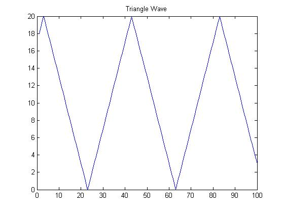
The second demo program demonstrates the correlation aspect of the GPS algorithm and uses one of the special instructions for our processor, population count (popc).The code is linked here We initialized the data memory to have two 32 bit numbers, the PRN-code from the satellite and the copy being received. We created an assembly code that ANDs the two numbers, does a population count, and stores that data in memory. It then shifts the received signal and repeats. After every memory store of the population count, a break instruction occurs so MATLAB can access this. MATLAB ends up plotting a correlation graph (very similar to the example above) with the highest point clearly being 3 shifts away like the example. See the figure below for a screenshot.
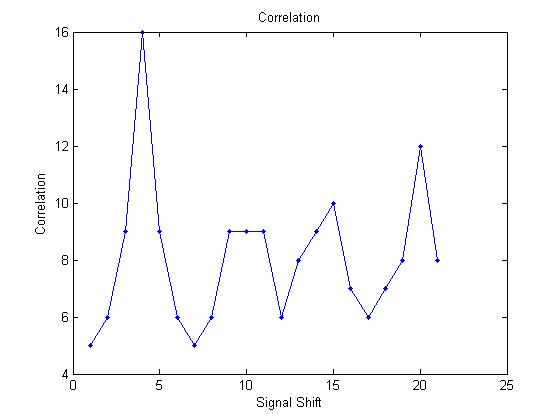
It was difficult to get either program to run on the processor. A good portion of our debugging time was devoted to getting them working. It is extremely difficult to debug a processor since there is so much information to look at every single cycle, and there are thousands of cycles per second. We used SignalTap as our main debugging tool. With it, you can access wires in the processor and see a waveform of the wires over time. It’s important to be very careful about which signals you chose, since SignalTap will not be able to display certain signals. In addition, you can set triggering conditions and have a power-up trigger to see data on boot. Smart selection of signals and triggering conditions result in significantly more efficient debugging. It takes a long time to compile with SignalTap and you need to ensure you don’t enable too many signals or the compile will fail due to lack of memory. We all became more proficient at SignalTap as time went on. There were a few major results we gained from SignalTap. The first and most useful was that there were still timing issues in our processor, and that it became necessary to pad instructions with junk instructions to ensure they would execute properly. We ended up padding every instruction with two or %0, %0, %0 (bitwise or of register 0 with register 0, which contains 0, and then store back in register 0), though this may have been overkill. In addition, around breaks this becomes even more important as we were skipping large amounts of instructions causing faulty branches/jumps. We padded breaks with five junk instructions after each break. The next major result was that memory wasn’t loading the correct data. We eventually realized that memory addresses needed to be multiplied by two to get the correct data, and that neither the compiler nor the processor does this for us automatically (ie. to access memory location 6, you need to do a lw of 12). After this, memory was accessed correctly. The final major result, which still remains unresolved, is that there appears to be a memory issue with the FPGA. We learned this when we noticed if you changed nothing but SignalTap, you could cause a program to succeed or fail. We believe that the amount of memory SignalTap uses, and potentially which wires are chosen to examine, may be causing the programs to fail. This issue remains unresolved. The debugging did, for the most part, prove successful as we were able to get both programs to run on the BRC processor.
What Didn't Work
In the end we were not able to get a working version of the GPS tracking code compiled. We successfully translated the code from MATLAB to C, but due to several compiler error we were unable to generate a binary from any C program. While trying to compile both assembly and C code we found many bugs in the compiler. For example, we found that the compiler was generating the wrong binary code for the adcld instruction. The rs and rd fields were being switched around. This could be fixed by switching the rs, and rd fields when writing the assembly code. Furthermore, we also found that the jumps (which jumps to absolute PC value specified in the immediate field) do not take into account the additional extra instruction header at the beginning of the program, and hence will jump to an incorrect PC value. This can be fixed by removing the header instructions of the compiled binary by hand.
In the end the biggest setback that prevented us from having a working version of the GPS tracking code was the compiler not being able to find certain libraries needed to compile our C program. We cannot compile floating point math because we cannot link to the floating point libraries in the gcc executables. Since the hardware does not have a mult/div functional unit or a floating point arithmetic unit, all multiplies, divides, and floating point instructions are emulated in software. Thus, without full compiler support, we cannot complete the math that is involved in satellite tracking. This was a major setback to the project but since compiler work is out of the scope for 576, we will be fixing these software issues in the future. In the end, we still managed to create assembly programs to run on our CPU.
Another bug that we found in hardware was the skipping of an instruction in the cycle after ready is deasserted. Whenever we come back from debug mode the ready signal deasserts and the PC jumps on the negative edge of the system clock. The PC register is clocked at the positive edge of the system clock. This error is seen in signal tap and was verified by seeing that the instruction in this slot would not show up in memory.
The last feature that we wanted to implement that did not work was the ADC FIFO system. Data was buffered in correctly, but when using the adcld instruction to load the input data from the FIFO to the register nothing happened. We believe that there is a failed timing path that is related to the architecture design. As mentioned in the “Clocking the CPU” portion of the design section, Quartus indicated a path in the ADC system that failed by 20ns. The path was from a read pointer logic to the FIFO memory which uses this read pointer. If this pointer was not updated quick enough it would explain why we were not loading the proper value from the FIFO. From inspecting signal tap we saw that the read pointer does not increment at all even though the correct instruction is loaded. Running the processor at lower frequencies did not reduce the failed timing path. This indicates that the signal is provided at the same instance it is needed. This leads us to believe that there is a critical problem with the ADC logic of the processor, which will need to be investigated further.
Results
We were successfully able to implement the BRC design on the FPGA with some minor changes. The main hardware change was the memory files used. Since the original design used the ARM memory compiler to generate the icache, dcache, and ADC FIFOs, the FPGA cannot compile such files. In order to replace the memory, we used Altera Megafunctions such as altsyncram on the FPGA that utilizes the M4K blocks as icache, dcache, and ADC FIFOs. The memory can then be preset to be instantiated with instructions or data using .mif files. We wrote a simple script that will convert our binaries into .mif file format to instantiate in either cache.
We were able to run the design at 5Mhz. Although, two timing paths failed one did not affect the correctness of execution in the end. The other path, in the ADC state machine, always failed no matter the clocking frequency. The logic of this hardware needs to be reanalyzed.
The Nios II was successfully able to control the state machine which controls the CPU. Through the console the user can read our instruction and data memory, and send the cpu data memory to MATLAB through RS232 serial port.
MATLAB, after receiving the data, did continuously display the data through real time plots. We were able to simulate a triangle wave on the MATLAB computed through a set of assembly instructions running on the CPU. For every iteration of the program, the break instruction would halt the CPU, allowing the Nios II to read out the current point of the triangle wave stored at a specific memory location and plot on MATLAB. The program runs continuously and will trace through a triangle wave, as seen on MATLAB.
Also, we were able to show on MATLAB the plot of correlation computation given a set of data in the memory. This utilizes the popc instruction that is used in the algorithm to find the correlation of GPS signals. We wrote this algorithm in BRC assembly, where we can verify through MATLAB output plots that the custom instruction popc works.
Conclusion
In the end we were able to show one of our three main objectives working. The objective were as follows: input data through the ADC buffer, run the GPS tracking algorithm on the input data, and output the data as seamlessly as possible to MATLAB. The first failed due to hardware design issues, the second due to lack of a working compiler. The third was successful. Instead of running the full GPS tracking code on the processor we were able to write a short assembly program that computed correlation for two predefined values. This is the main part of the algorithm which we wanted to run, and is a partial indication that the system is suitable to compute correlation on real signals. We were also able to show that the system can communicate with a third party in relative “real time”.
What we would do differently next time is to first make sure there is full support set of tool we are integrating with, especially when we are working with a custom ISA and ported gcc.
Intellectual Property Considerations
The BRC design was all written by last years Big Red Chip team. The intellectual property of the design therefore belongs to the team and in association to Cornell University. Although the design is intended to be used freely by the Cornell community it is still considered to be under design and is not considered open to the community at this time. We used Altera intellectual property to integrate the CPU with the rest of the design. We used Altera’s IP altsyncram Megafunctions for all CPU memory and altpll for the PLLs. Altera’s IP Nios II processor was used for transmitting data and state machine control. The code that we translated to C we based of a matlab algorithm written by last years BRC team which was based off a bitwise algorithm developed by Cornell’s GPS lab. The CPU design itself is rather innovative and is possibly patentable, although we do not own the rights to the design. The control which we implemented ourselves has no likely patent potential.
Appendix
Link to top level code (includes state machine): full_cpu.v
Link to triangle wave assembly code: triangle.asm
Link to correlation assembly code: correlation.asm
Link to Nios II code: hello_world.c
Link to MATLAB code: testcommunication.m
Link to Triangle Wave movie: trianglemove.mpg
Note this is only a partial listing of code. Due to the fact that the BRC processor is still in development and the intellectual property of Cornell, we cannot post it here. If you are interested in seeing a full copy of the code, please contact Professor Bruce Land at BRL4@cornell.edu.
Tasks
ADC - Franco
Compiler - Wan Ling
MATLAB Interface - David
General Hardware - David and Franco and Wan Ling
Debugging - David and Franco and Wan Ling
Documentation - David and Franco and Wan Ling
Assembly - David and Franco and Wan Ling
References
How GPS Works: Runtime Measurement of the Signals
Professor Bruce Land Research: Driving a SRS Model SR830 Lockin Amplifier from Matlab
Cheap-gps: How does a GPS Work?
Acknowledgements
Thanks To Bruce Land and all the ECE 576 TAs for their support. Thanks to the GPS Professors and Grad Students at Cornell for all their help. Thanks to last years BRC team for their support and the design.